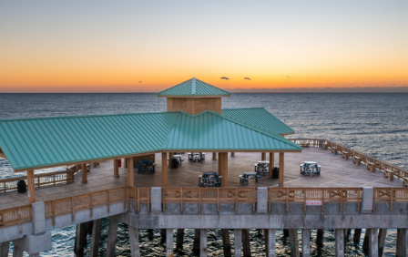
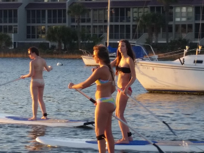
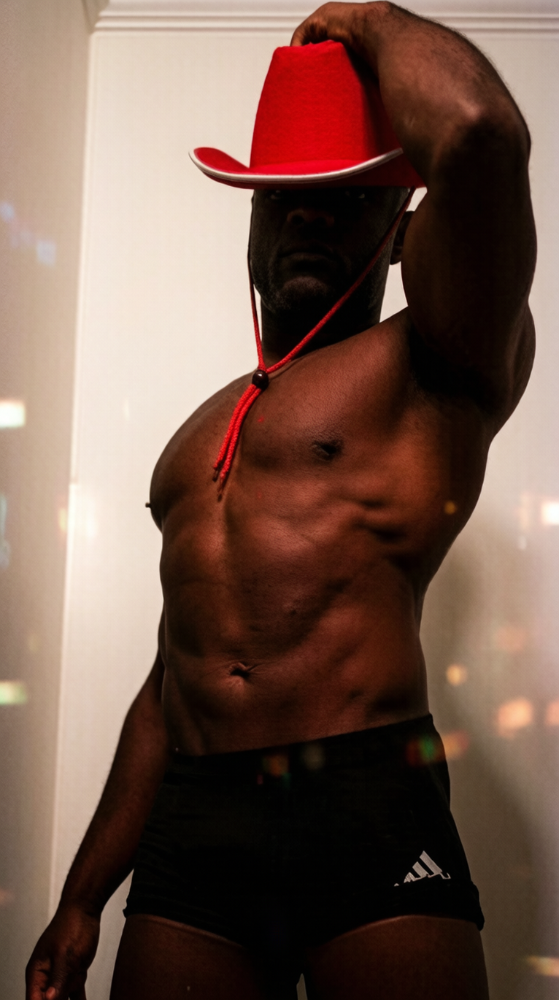
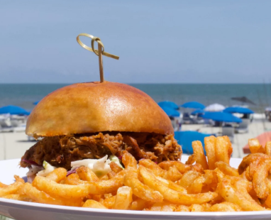

Folly Beach Bachelorette Weekend

Folly Beach runs on sand, salt water, and Center Street. Get on the river in the morning, spend the afternoon on the beach, and eat and drink within a few blocks of the pier. Book a house close to the action and nobody needs a car until it's time to leave.
Folly sits at the end of Folly Road, about twenty minutes south of downtown Charleston. Locals call it the Edge of America, and it's the most laid-back of the Charleston beaches, with surf shops, taco joints, and dive bars where the dress code is a cover-up. This guide covers what to do, where to eat, where to stay, a two-day plan, and the local rules worth knowing before anyone books a house. For the downtown side of the trip, start with our Charleston SC bachelorette guide.
Why Folly Beach works (and where it falls short)
The island gives a group three things downtown can't: an ocean beach out the back door, dolphins in the river behind it, and a main street you can walk end to end in flip-flops. Late spring and early fall are the sweet spots. Summer works if the group paddles early and hits the sand before the parking fills.
The shortfall is the dance floor. Center Street has plenty of bars and live music, but nothing on the island compares to a night on King Street. Keep one big night downtown, rideshare up Folly Road, and use the island for everything else.
The best water for a bachelorette group
There are four places to get on or beside the water, and each one suits a different part of the day.
The Folly River. Calm marsh water on the back side of the island, with bottlenose dolphins feeding most days. It's the easiest place in the area to put a first-timer on a kayak or paddleboard.
Folly Beach Pier. The rebuilt pier stretches more than 1,000 feet over the Atlantic from the middle of the island. Walk it at sunset, then grab drinks at Pier 101 Restaurant & Bar at its base.
Lighthouse Inlet Heritage Preserve. At the quiet north end of the island, a short walk out the old road ends with the Morris Island Lighthouse standing offshore. It's the sunset photo of the weekend.
Folly Beach County Park. Wide sand at the west end, with lifeguards in season, restrooms, showers, and chair and umbrella rentals. Pick it for a full beach day when the group wants space to spread out.
Daytime Folly Beach bachelorette ideas

Give each day one booked activity and let the rest happen around it. These are the anchors that work best for a group.
Paddle with Charleston SUP Safaris. Its kayak and paddleboard dolphin tours leave from Center Street and start with a short ground school on land, so beginners are fine. Morning and sunset tours both run, and private groups are welcome.
Boat tour with Flipper Finders. For a group that would rather ride than paddle, its guided boat and kayak tours go out from the edge of the Folly River, a short walk from Center Street.
Party cruise on the Dolphin Queen. A private three-hour charter on the Folly River, with the boat to yourselves. It's the easiest way to keep a big group together on the water.
Surf lesson at McKevlin's. Folly is where Charleston learns to surf, and the Washout stretch on East Ashley is the local break. Book a group lesson and get the bride standing up by lunch.
Golf cart cruise. Rent a street-legal cart for the weekend and roll from the house to Center Street. Every cart needs its state and City of Folly Beach stickers, so rent from a local shop that handles them.
Center Street shopping. Surf shops, swimwear, and beach-town boutiques line the few blocks between the bridge and the pier. Pick up matching hats or cover-ups for the group photo.
The private show comes to you

Folly Beach has no club for this, so Michael At Your Place brings the show to your beach house or hotel suite. One entertainer performs a traditional, interactive show, booked for brunch or late night cap to girls night out.
It's $200 for up to 90 minutes, paid on arrival by cash, Venmo, or Cash App. Last-minute dates are welcome, so call or text 843-360-9438.
Where to eat, from brunch to the last round
Beach cafes in the morning, tacos and seafood by afternoon, and Center Street bars at night. Book ahead for groups larger than six, especially on summer weekends.
Brunch
Lost Dog Cafe on West Huron Avenue is the island's breakfast institution, a few blocks from the pier. Order the eggs Benedict and a Mason jar mimosa, and expect a wait on Saturdays. Rita's Seaside Grille at 1 Center Street serves weekend brunch steps from the sand. Lowlife Bar on Hudson Avenue does the most creative brunch plates on the island, with a rooftop to match.
Lunch and sunset on the island
Center Street keeps everything within walking distance. Taco Boy is the group lunch, with a big patio and frozen margaritas. Chico Feo on East Ashley is the backyard hangout with live music and the island's best vibe. Folly Beach Crab Shack covers the steamed seafood, and Loggerhead's Beach Grill on West Ashley has a deck a block from the water. For the last round, The Washout and Jack of Cups Saloon on Center Street keep the night going.
The celebration dinner
BLU Beach Bar & Grill at Tides Folly Beach is the dressier option, with ocean views beside the pier. Jack of Cups trades seafood for globally inspired comfort food and craft beer. On the way onto the island, Bowens Island Restaurant serves roasted oysters with one of the best sunset views in Charleston.

Where to stay on the island
Folly is a beach-house town with only a couple of hotels, so decide early which one your group needs.
Tides Folly Beach sits on the oceanfront next to the pier, with a pool and every Center Street bar a short walk away. Hotel Folly, the big pink building just over the bridge, is the casual alternative on the river side. A block of rooms keeps the group together without any of the rental questions.
A house gives everyone one kitchen, one porch, and room for a private show, and most groups pick one within walking distance of Center Street. Folly caps investor short-term rental licenses and has paused most new ones, so ask the host for the city business license number and tell them it's a bachelorette group before you pay a deposit.
A two-day plan that actually works
Copy it, swap pieces, but keep the order. Water early, beach midday, Center Street at night, and downtown once.
| When | Plan | What makes it work |
|---|---|---|
| Day 1, morning | Check in, drop bags, coffee, then a walk out the Folly Beach Pier. | Pin one meeting spot in the group chat for the whole weekend. |
| Day 1, midday | Tacos and margaritas on the patio at Taco Boy. | Walk to lunch, so nobody gives up a parking spot. |
| Day 1, afternoon | Beach time by the pier, then drinks at Pier 101. | Bring cans of soda for the sand and save the drinks for the bar. |
| Day 1, night | Celebration dinner at BLU, then the private show back at the house. | Book the show for an hour after dinner, not during it. |
| Day 2, morning | Kayaks or paddleboards on the Folly River with Charleston SUP Safaris. | The river is calmest early, and dolphins feed in the morning. |
| Day 2, midday | Brunch at Lost Dog Cafe. | Get there early or put a name on the list and walk Center Street. |
| Day 2, golden hour | Group photos at Lighthouse Inlet with the Morris Island Lighthouse. | Leave 20 minutes for the walk out from the parking lot. |
| Day 2, night | Rideshare up Folly Road for King Street. | Book the ride back early. Cars thin out on the island late at night. |
Rules to know before you book
On the beach. Folly bans alcohol and glass on the sand, along with plastic bags, balloons, and Styrofoam, and fines can top $1,000. Smoking is banned on the sand and the beach accesses. A group of more than 25 people on the beach needs a city permit. Pack fabric banners, and skip the confetti and glitter, which the pier and county parks also ban.
Rentals. A listing without a City of Folly Beach license can be shut down mid-stay. Read the house rules on noise and guest counts, and confirm parking for every car.
Getting around. Street parking is free only if all four tires are off the road, and the island fills fast on summer weekends. Carpool in, walk or cart once you're here, and plan a rideshare for any night that includes drinks.
Rules come from the City of Folly Beach and Charleston County Parks, and they change. Check the city's website before the trip. All picks here are our own, and no business paid to be listed.